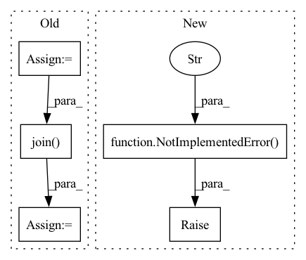

Pattern ID :20233

Before Change
def run(self, articlePage):
try:
soup = BeautifulSoup(articlePage.body, features="html.parser")
body = soup.find("div", class_="has-content-area")
content = "\n".join([v.text for v in body.children])
meta = soup.find("meta", property="article:published_time")
return ArticleText(
articleTextId=articlePage.articlePageId,
publishDate=datetime.fromisoformat(meta.attrs["content"]),
After Change
pass
def run(self, exampleInputObject1, exampleInputObject2):
raise NotImplementedError(f"{self.__class__.__name__} must implement run()")
return exampleOutputObject
In pattern: SUPERPATTERN
Frequency: 3
Non-data size: 5
Instances
Fragment ID: 65919949
Project Name: hypergol/hypergol
Commit Name: 10d1287121181b7d0cf5fe7cc4ba181743719ef6
Time: 2020-06-28
Author: sragner@gmail.com
File Name: src/test_projects/example/tasks/create_article_texts_task.py
M Class Name: CreateArticleTextsTask
N Class Name: CreateArticleTextsTask
M Method Name: run(3)
N Method Name: run(2)
M Parent Class: Task
N Parent Class: Task
M File Name: src/test_projects/example/tasks/create_article_texts_task.py
N File Name: src/test_projects/example/tasks/create_article_texts_task.py
M Start Line: 13
M End Line: 33
N Start Line: 17
N End Line: 19
'>
Before Change
// setup model
loss_record, most_recent_encoder_path = model.learn(dataset_dict, pretrain_epochs, pretrain_batches)
if ppo_finetune and not isinstance(model, algos.RecurrentCPC):
encoder_checkpoint = model.encoder_checkpoints_path
all_checkpoints = glob(os.path.join(encoder_checkpoint, "*"))
latest_checkpoint = max(all_checkpoints, key=os.path.getctime)
encoder_feature_extractor_kwargs = {"features_dim": algo_params["representation_dim"],
"encoder_path": os.path.abspath(latest_checkpoint)}
After Change
loss_record, most_recent_encoder_path = model.learn(
webdataset, pretrain_epochs, pretrain_batches)
if ppo_finetune and not isinstance(model, algos.RecurrentCPC):
raise NotImplementedError("PPO fine-tuning is not currently supported")
// encoder_checkpoint = model.encoder_checkpoints_path
// all_checkpoints = glob(os.path.join(encoder_checkpoint, "*"))
// latest_checkpoint = max(all_checkpoints, key=os.path.getctime)
'>
Fragment ID: 65919951
Project Name: humancompatibleai/eirli
Commit Name: 1086682dee2c96d5c039e3190b1fec8ce4c683bd
Time: 2020-11-16
Author: sam@qxcv.net
File Name: src/il_representations/scripts/run_rep_learner.py
M Class Name: AnonimousClass
N Class Name: AnonimousClass
M Method Name: run(11)
N Method Name: run(11)
M Parent Class:
N Parent Class:
M File Name: src/il_representations/scripts/run_rep_learner.py
N File Name: src/il_representations/scripts/run_rep_learner.py
M Start Line: 126
M End Line: 161
N Start Line: 123
N End Line: 165
'>
Before Change
// setup model
loss_record, most_recent_encoder_path = model.learn(dataset_dict, pretrain_epochs, pretrain_batches)
if ppo_finetune and not isinstance(model, algos.RecurrentCPC):
encoder_checkpoint = model.encoder_checkpoints_path
all_checkpoints = glob(os.path.join(encoder_checkpoint, "*"))
latest_checkpoint = max(all_checkpoints, key=os.path.getctime)
encoder_feature_extractor_kwargs = {"features_dim": algo_params["representation_dim"],
"encoder_path": os.path.abspath(latest_checkpoint)}
After Change
loss_record, most_recent_encoder_path = model.learn(
webdataset, pretrain_epochs, pretrain_batches)
if ppo_finetune and not isinstance(model, algos.RecurrentCPC):
raise NotImplementedError("PPO fine-tuning is not currently supported")
// encoder_checkpoint = model.encoder_checkpoints_path
// all_checkpoints = glob(os.path.join(encoder_checkpoint, "*"))
// latest_checkpoint = max(all_checkpoints, key=os.path.getctime)
'>
Fragment ID: 65919944
Project Name: humancompatibleai/eirli
Commit Name: 47ccff934463fdfcd9a8887bff27286744d1fe17
Time: 2020-11-16
Author: sam@qxcv.net
File Name: src/il_representations/scripts/run_rep_learner.py
M Class Name: AnonimousClass
N Class Name: AnonimousClass
M Method Name: run(11)
N Method Name: run(11)
M Parent Class:
N Parent Class:
M File Name: src/il_representations/scripts/run_rep_learner.py
N File Name: src/il_representations/scripts/run_rep_learner.py
M Start Line: 126
M End Line: 161
N Start Line: 123
N End Line: 165